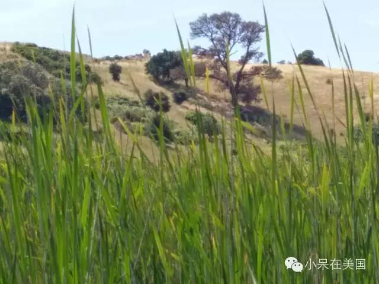
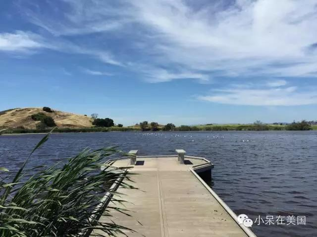
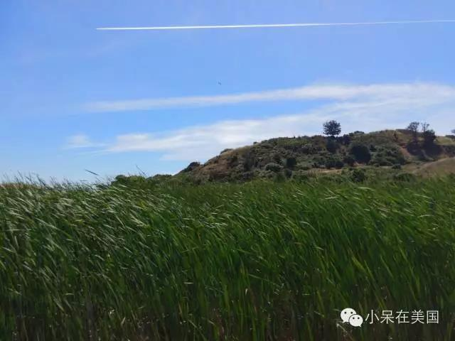
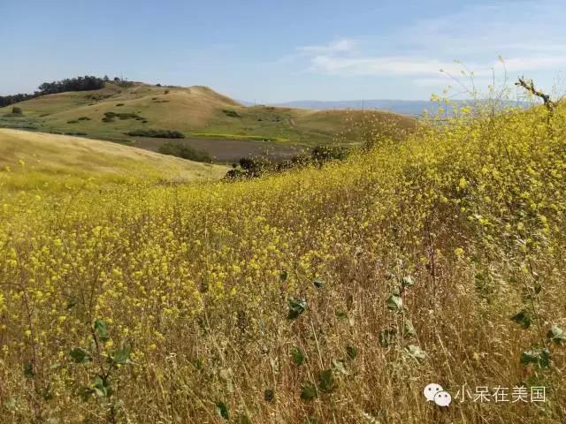
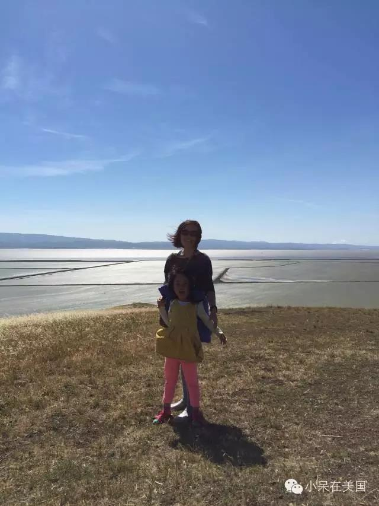
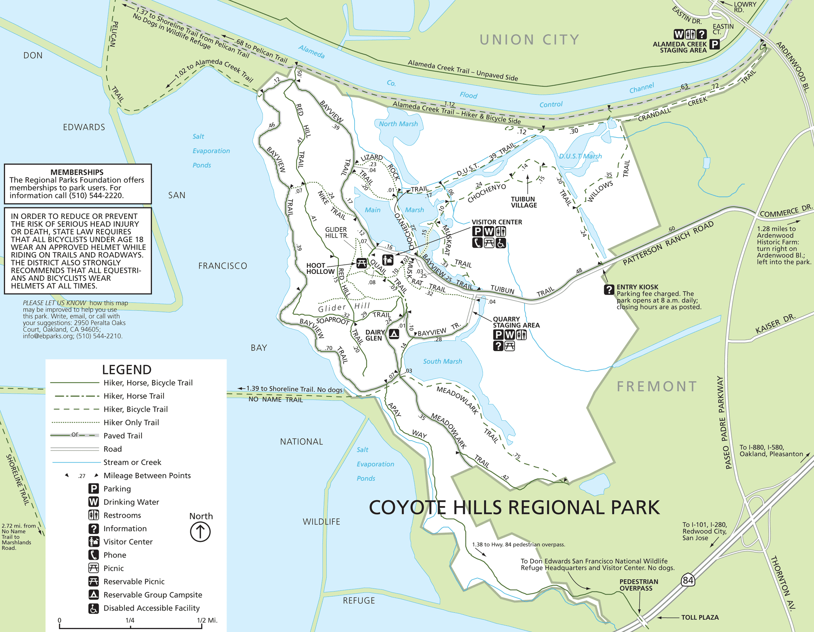
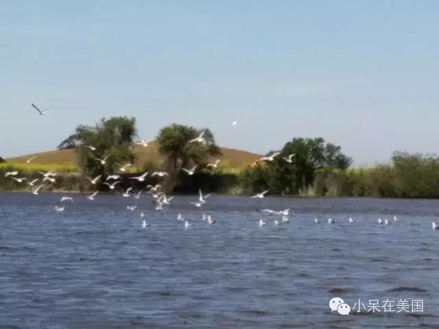
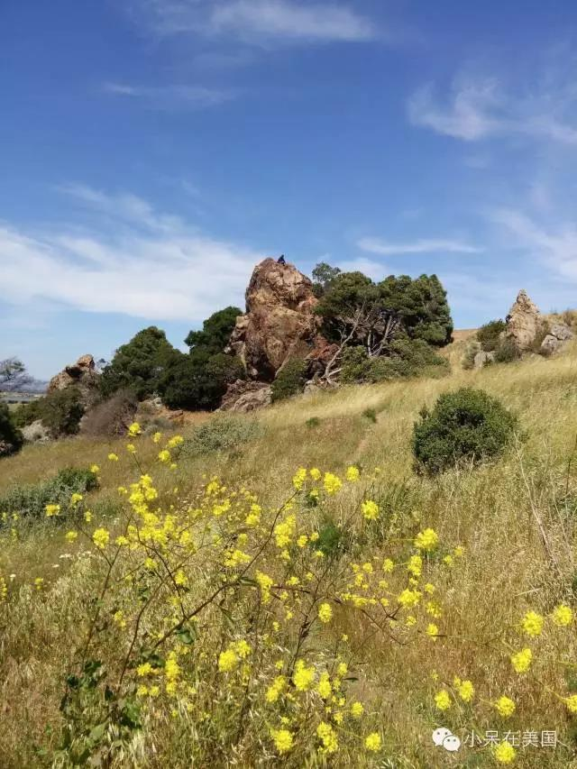
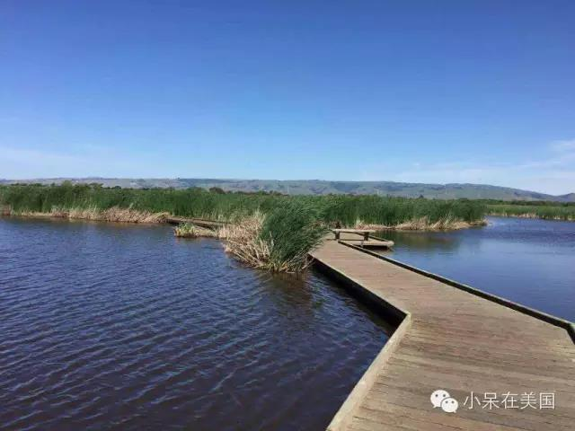
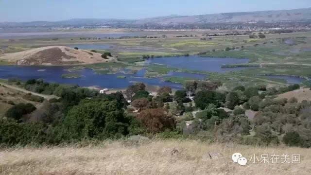

Coyote Hills Regional Park
在这个草长莺飞的季节，Hiking想必是大家周末非常热衷的活动项目了。小编今天想向大家介绍位于Fremont的Coyote Hills Regional Park! 这周末小编和朋友们去那里了，可以说，绝对是尽兴而归，因为那里的风景真的好棒！
公园从1967年开始对外开放。位于旧金山湾的东侧 , Fremont和Newark的西北侧，背靠San Fransico Bay ,非常接近高速84 。公园内是将近978平米的沼泽和草地，夏天到了，大家可以看到一片一片的野花，绿绿的芦苇、水草和风轻摇，而且随意攀上小小的一座山顶，就可以看到大片无敌海景，可以说让人感觉十分惬意和浪漫呢！
 大家可以在园内骑脚踏车，跑步，散步，骑马，野餐，露营，观察大自然等等。
 入园时，可以在右手侧得到完整的地形图一份，照着地图，就可自由选择Hiking的路线了。公园内有好几条trail供大家选择，如：
Alameda Creek Trail
Bay View Trail
Chochenyo Trail
Chochenyo Loop Trail
看到这里，大家应该有点动心了吧，那就赶快行动吧
   About us
We provides bay area events and activities information.
Contact
funsbayarea at gmail.com.